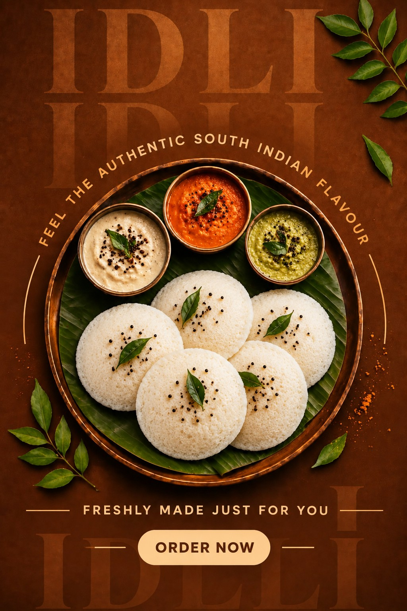

SOUTH INDIAN
South Indian Idli with Chutney
Soft, fresh idli served with flavourful chutneys.
Enquire on WhatsApp →TWO TRADITIONS. ONE PLACE.
Two favourites, freshly prepared — South Indian Idli with Chutney and Banarasi Hing Kachori.
OUR CONCEPT
Kashi & Kaveri Foods brings two traditions together in one simple food experience — fresh, vegetarian and prepared with care.
OUR PROMISE
Made fresh for a better eating experience.
Simple vegetarian food made with care.
South Indian and Banarasi favourites together.
Focused menu, quality ingredients and honest taste.
VISIT US
Supertech Eco Village-1, Sector 1
Bisrakh Jalalpur, Greater Noida
Uttar Pradesh – 201318
Freshly prepared Pure Veg food.
GOOGLE REVIEWS
A few words shared by customers on Google.
Recommendation for vegetarians: Highly recommend.
Amazing taste, great quality, and a perfect combination. Must try! ❤️ 😊
Will visit again.
The coconut chutney was fresh, creamy, and full of authentic South Indian flavour. The combination of soft idli and tasty chutney was simply amazing. Everything tasted fresh, hygienic, and homemade. ❤️ Highly recommended for anyone who loves delicious idli. Definitely worth trying! 😍
SHARE YOUR EXPERIENCE
Scan the QR code to open Kashi & Kaveri Foods on Google Maps and leave your genuine review.